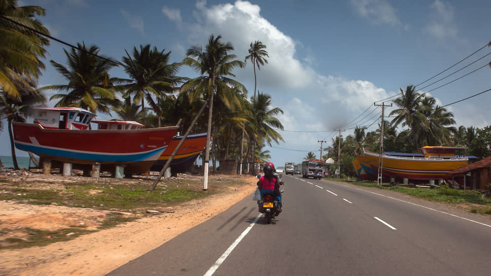

Дорого ли снять комнату на берегу Индийского океана, прокатиться на тук-туке и купить литр свежего кокосового масла.
Шри-Ланка — небольшое островное государство в Индийском океане с населением около 22 миллионов человек. При этом Шри-Ланка обеспечивает почти четверть всего мирового экспорта чая, того самого цейлонского. На острове добывают драгоценные камни, производят каучук и выращивают кокосовые пальмы, свой вклад в экономику страны вносят и туристы, приезжающие за традиционными для курортов Азии развлечениями: пляжами, экзотической кухней и экскурсиями в буддийские храмы. Мы узнали у Виктории Планеттэр , более трех лет назад переехавшей на Шри-Ланку, сколько там стоит жилье, транспорт и питание.
Переезд
В конце 2014 года я захотела отправиться в большое путешествие. До этого я уже
успела побывать
во многих странах Азии, но на Шри-Ланке не была, к тому же туда было не так далеко лететь. Поэтому
решено
было встретить Новый год именно там. На отдых мы поехали вместе с моей мамой. В первую же неделю отдыха
я
познакомилась со своим будущим мужем. Он показался мне просто симпатичным пляжным мальчиком, но наши
отношения так быстро завертелись, что через месяц мама уехала домой одна, а я осталась на Шри-Ланке.
Сейчас
у нас растет сын, ему 2,4 года, и я в ожидании второго малыша. Но думаю, что моя адаптация в новой
стране до
сих пор не закончена, и, скорее всего, она будет длиться всю жизнь.
Мы довольно часто приезжаем в
Россию,
но живем на Шри-Ланке в месте под названием Мирисса. Это один из самых красивых и популярных у туристов
пляжей острова. Наш дом расположен в пяти минутах от океана. Мы с мужем работаем на пляже: я — фотограф,
снимаю молодоженов в живописных уголках острова, еще помогаю приезжающим на Шри-Ланку русским найти
жилье и
организовать отдых. Плюс в этом году мы открываем свой ресторан здоровой кухни.
Доходы населения
Часто о ланкийцах говорят как о ленивых людях, которые все любят откладывать на завтра. На самом деле на острове живут две народности — тамилы и сингалы, и отношение к труду и деньгам у них разное. Говорят, что тамилов завезли из Индии английские плантаторы, когда уже жившие здесь сингалы отказались собирать чай за очень скромные деньги. Действительно, сингалы никогда не возьмутся за дело, если не видят для себя выгоды, бесплатно они не пошевелят и пальцем, даже если придется сидеть без работы полгода. А тамилы готовы браться за тяжелый и низкооплачиваемый труд. Они из поколения в поколение собирают чай — по 20 килограммов всего за 800 рупий (320 рублей) в день. Средняя зарплата на Шри-Ланке — около 25 тысяч рупий (10 тысяч рублей), но она сильно зависит от сезона.Весь туристический сектор — гиды, инструкторы, официанты пляжных кафе — зимой зарабатывает вполне прилично, к их счастью, туристический сезон может длиться до полугода. Причем все туристы здесь по умолчанию считаются богатыми. По логике местных, если ты нашел деньги на билет сюда, то они у тебя есть. 40 тысяч рупий (16 тысяч рублей) — это для Шри-Ланки уже очень хорошая зарплата. Столько могут получать квалифицированные специалисты.
